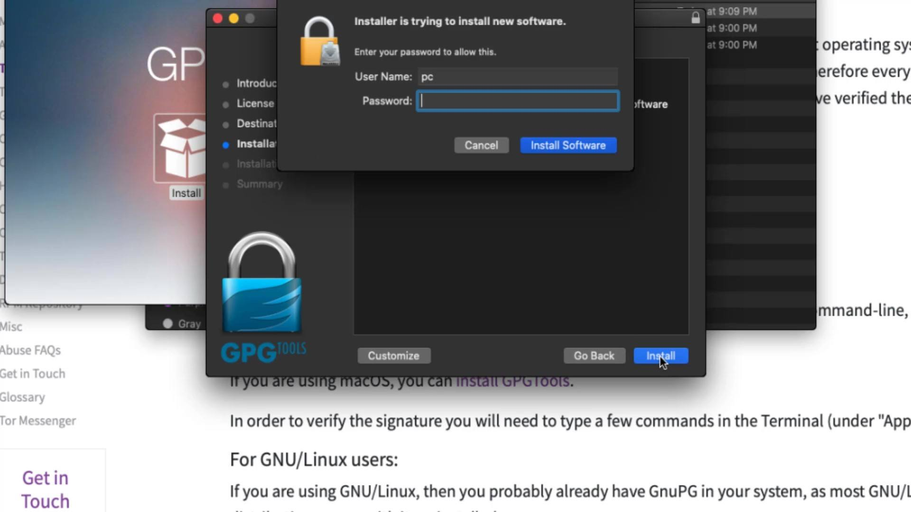
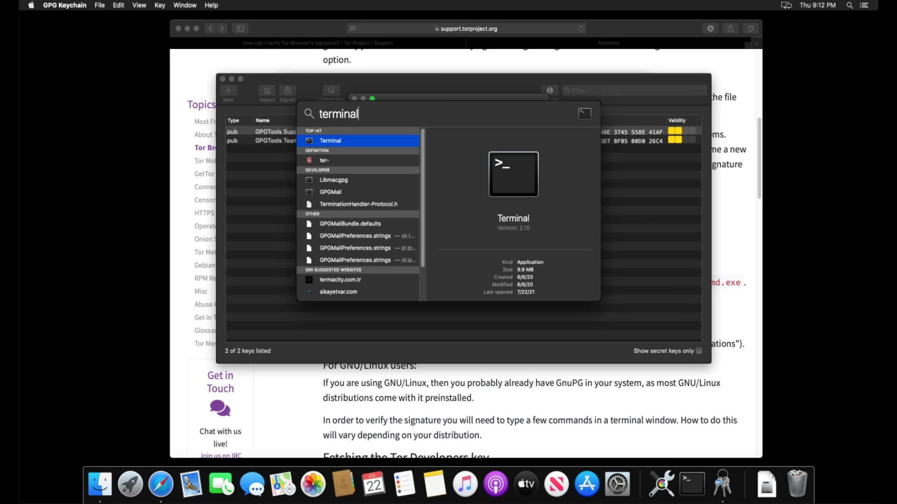
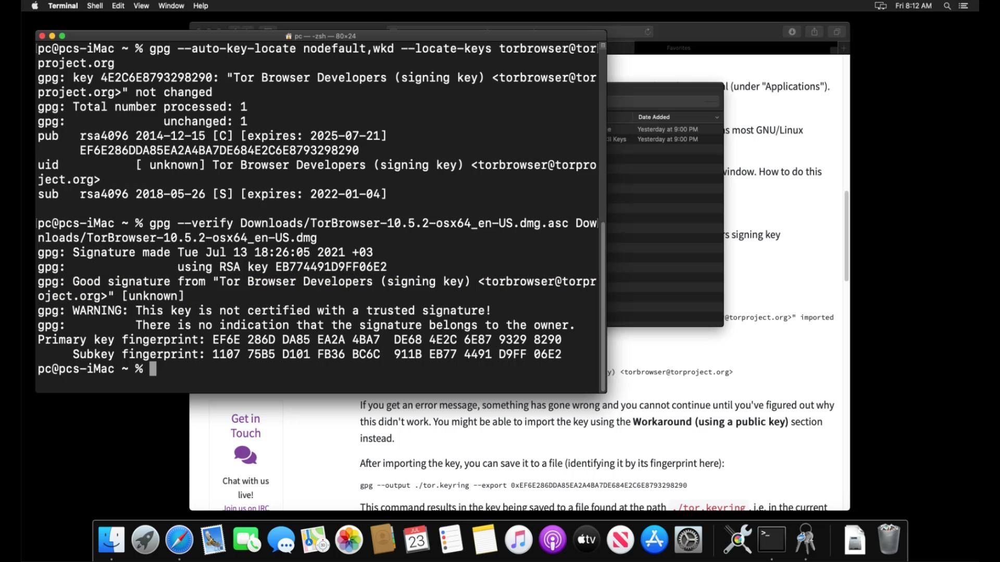
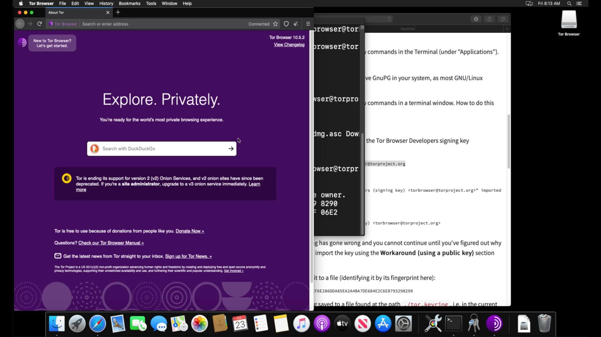

Tor Browser Verification and Installation (MacOS)
Before the installation process, you should perform signature check to verify the content of the setup file you downloaded. You can use the official guide to follow the verification steps easily. I added this verification guide link in this lecture sources.
You will use the GPGSuite tool to verify the setup file before installing . To download tool, go to https://gpgtools.org/ and click the " Download " button.

After the download, you can start the installation by double-clicking the setup file and click "Install" in the window that opens. Let's complete the installation process in a short time by giving all the necessary approvals for the installation.

Now that you have installed the verification tool, you can verify the signature by opening the terminal. If you don't know how to open the terminal, you can access it by searching " Terminal " from the applications section or the search bar .

In order to verify the signature, you first need to import the developer key. Enter the command to import the developer key.

When you enter the command correctly, the developer key is imported as you can see.
After importing the key successfully, let's enter command by specifying the locations of the setup and signature files downloaded. Since the files I download are in the downloads folder, I enter command in this way. When entering the command, it is important that you first specify the signature file, that is, follow the command order. When you click the tab key while typing the file names, the name will be completed automatically.

And as a result, the output i got matched with the developer key i imported, proving that my file is signed by the Tor developers and has not been modified. If your file was a modified file, you wouldn't be able to get this output as this signature match wouldn't be provided. In this case, you need to download the setup file and verification key from an alternative download source again and try this verification process again.
Now that you've verified your file, you can start the Tor browser installation by double-clicking the setup file.
You can drag and drop the Tor application icon onto the "Applications" icon to install Tor Browser on your computer.

When the move process is finished, the Tor browser is ready to use. You can run it smoothly by clicking the browser icon from the applications section. In the window that opens, you should click the "Connect" button to connect the browser to the Tor network.

After a short while, the connection is ready and Tor browser is opened without any problems. Thus, you have installed the Tor browser very easily. We will talk about its use in detail in the following lectures.

Finally, I would like to point out that it is not have to perform the verification process, but it is an extremely important detail for your security. As there is no difficulty at verification steps, I strongly recommend that you verify before the installation process.
In the next lecture, we will perform the same verification and installation process, this time for the Linux operating system. If you are not using Linux you can skip the next lecture directly.